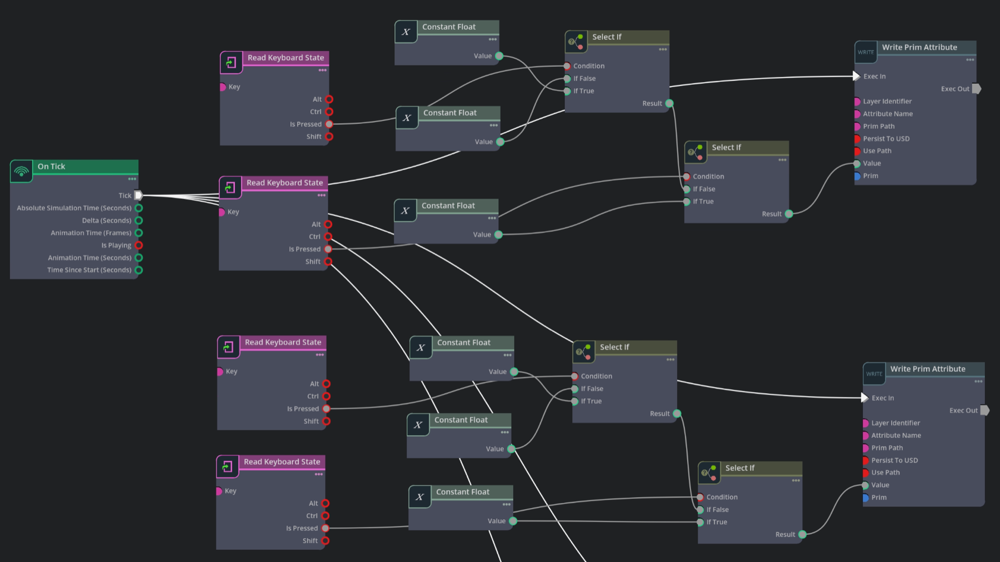

Visual Fidelity
Realistic site layout, materials, textures, machinery, and construction objects derived from project references.
Isaac Sim + Isaac Lab virtual construction environment
A physics-enabled digital twin of construction sites for robot training, testing, simulation, and reproducible benchmark evaluation.
Research objective
The environment combines visual fidelity, physical fidelity, interactive construction equipment, and robot simulation to support training and evaluation in construction contexts.
Realistic site layout, materials, textures, machinery, and construction objects derived from project references.
Collision meshes, physics parameters, articulated joints, and controlled interactions in Isaac Sim.
Tower crane and wheel loader controllers for material handling and earth-moving style operations.
Unitree B2 quadruped locomotion trained with PPO in Isaac Lab for site navigation experiments.
Environment library



Benchmark portal
This scaffold is ready for formal benchmark release: task splits, metrics, baselines, leaderboard submission, and reproducibility documents can be filled in as experiments mature.
Leaderboard preview
| Method | Task Suite | Success | Safety | Status |
|---|---|---|---|---|
| PPO Unitree B2 | Quadruped navigation | Pending formal eval | Pending | Baseline |
| Keyboard controller | Tower crane / wheel loader | Reference only | Reference only | Control |
| External submission | All suites | To be released | To be released | Planned |
Video demos
Keyboard-driven crane boom, hook, and payload interaction inside the construction site.
USD machinery model with articulated joints, collision meshes, and bucket controller.
Unitree B2 locomotion demo trained in Isaac Lab and deployed in the virtual site.
Resources
The current project materials include slide documentation, run instructions, and local demo videos. This section is prepared for downloadable assets and documentation.
python scripts/rsl_rl/base/play.py --task RobotLab-Isaac-Velocity-Rough-Unitree-B2-v0 --checkpoint="checkpoints/model_1900.pt" --keyboard
W/S move cargo, A/D rotate boom, Q/E raise or lower hook.
Numpad 5/2 drive, 1/3 steer, 4/6 boom, 7/9 bucket.
Arrow keys translate, Z/X rotate after launching the Isaac Lab keyboard policy.
Team
Developed at the Digital and Robotics Construction Lab (DARC), University of Wisconsin-Madison.


Citation
Add paper metadata, BibTeX, dataset license, asset license, and benchmark terms here when the formal release is ready.
@misc{darc_construction_site_benchmark,
title = {DARC Construction Site Benchmark},
author = {Xu, Liqun and Han, Wei and Nie, Wenjian and Ding, Yujie and Zhu, Zhenhua},
year = {2025},
note = {Isaac Sim and Isaac Lab virtual construction site environment}
}